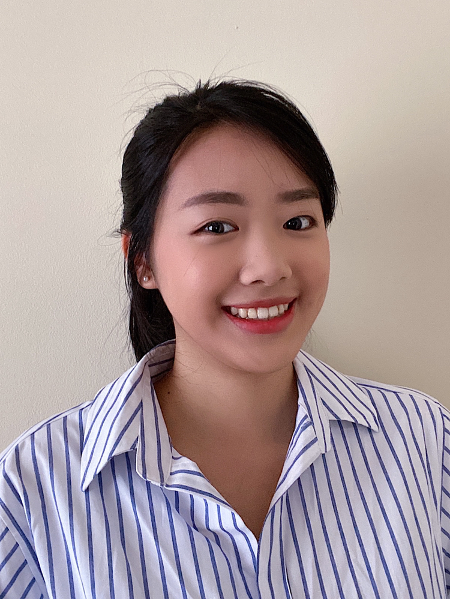

Managment Team
Meet the Team!
Amanda Jacobucci:
Operations Manager
As Operations Manager, Ms. Jacobucci's primary role is to oversee day to day activities within the company. She coordinates scheduling, inventory, payroll, and other essential tasks to keep the business as organized as possible and running smoothly. Without her and this position, daily tasks and errends would never get done and it would be much harder to maintain a functioning business. We are so greatful to have her help!
These are some of Amanda's favorite products we have to offer!
- Rustic iron Skillet - It's a great staple item to cook ANYTHING in!
- Ceramic Moose Mugs- great to have in your apartment when you need a nice, hot cup of coffee
- Metal Cooking Utensils - if you have the cast iron skillet, you must have the matching utensils!
Jake Pipp:
Vice President of Accounting
As Vice President of finance, Mr. Pipp oversees our accounting team and all financial transactions. His biggest responsibilities are to ensure payroll is paid on time and provide our company with financial analysis that asses the business, as well as, industry trends. We would never have a profitable or functioning company without the hard work and dedication from Mr. Pipp. Although, more importantly, no one would be paid without his time and knowledge.
These are some of Jake's recommendations regarding the services we have to offer!
- Standard Cleanings- great to have done a couple times a month to keep those kitchen products clean!
- Advanced Cleanings- if you skip out on a couple standrad cleanings, no worries, the advanced cleaning will get your stuff looking shiny again!
- Cleaning Lessons- perfect if you're a dedicated chef who may need some tips to upkeep the kitchen

Lesley Lin:
Product Manager
As Product Manager, Ms. Lin is responsible for creating a strategy that maximizes sales. She works directly with members from our engineering, sales, marketing, and finance teams to ensure the quality and effectivness of our products. She goes out of her way to ensure we sell top notch products that are affordable and useful to our intended consumer market. She knows exactly what the people need and want to see!
These are some of Lesely's favorite products we have to offer!
- Handmade Plaid Apron- this is essential so you do not stain your clothes, bonus is it's sustainable:)
- Big Bear Bowls- perfect for your soups to keep you warm on a snowy winter day
- Salt and pepper shakers- without these your food will only reach half its potential
Caitlyn Meredith:
Vice President of Marketing
As Vice President of marketing, Ms. Meredith is in charge of our marketing team. She strategizes how to promote our brand through social media, coducts market research, sets goals for sales revenues, and so much more. She is a huge asset to our team and we would have never been able to grow the company without her!
These Caitlyns's top three favorite products and services we have to offer!
- Rustic Iron Skillet- I love to make one-pot dinners in this! It's so versitile!
- Big Bear Bowls- you need something to put those amazing dinners in!
- Advance Cleaning- after making a couple meals in these, it never hurts to get things looking brand new again
Josh Riker:
Vice President of Customer Service
As Vice President of customer service, Mr. Riker is in charge of our team that reviews all of our customer feedback. He works to set goals to improve our customer relations, satisfaction, and overall company response time. He also trains our employees on how to be an effective and helpful staff member when it comes to customer concerns. Without Mr. Riker, we would not have the loyal customer base we do. He has worked to build us strong relations and is a crucial member to our company development.
These are Josh's top three recommended products and services we offer!
- Metal Cooking Utensils- I do a lot in the kitchen, and these utensils have been with me the whole way!
- Hommade Plaid Apron- with the amount of cooking I do, my clothes would be ruined without this quality product
- Cleaning Lessons- After attending these, I can maintain my space myself and keep it looking better than ever!
See where the teams from!
Link to file
Watch our team in action!
Have Questions?
Conatct me here!